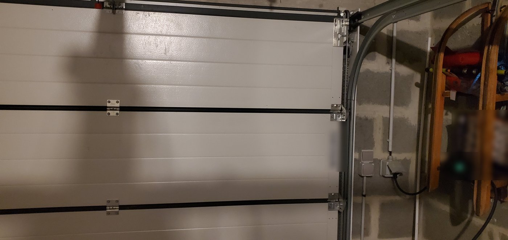
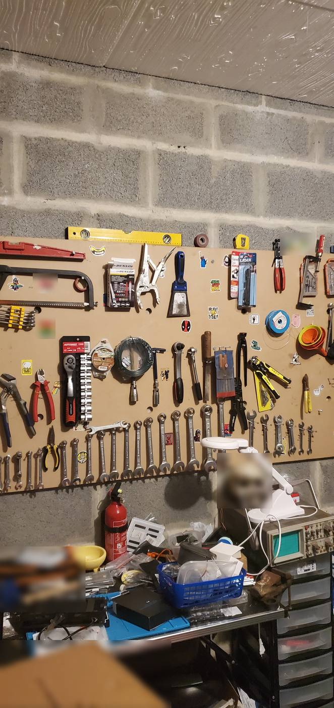
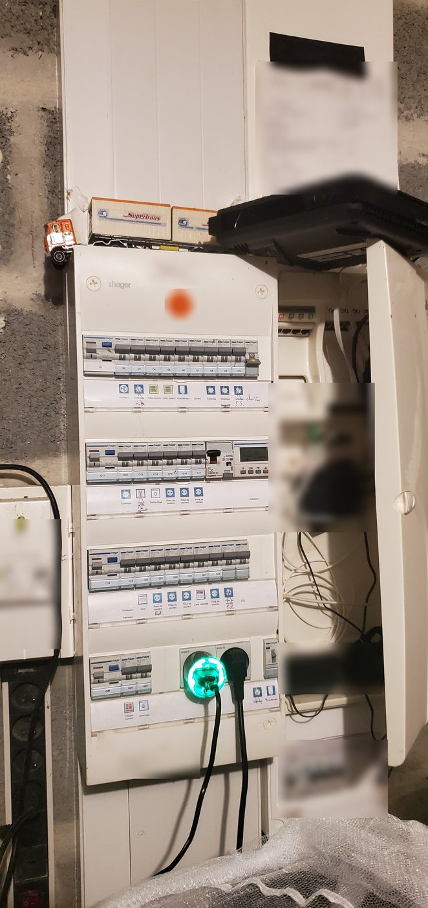
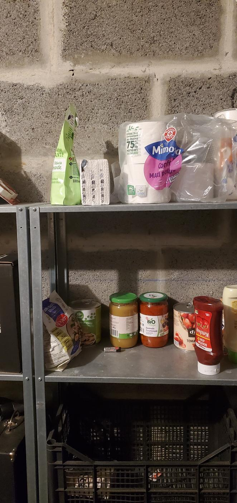

Le seul journal de Microcontrôland, écrit chaque soir par la passerelle
Ère 1, jour 37 · construit automatiquement à partir des données publiées
Le Musée national
Le musée de Microcontrôland n'a pas d'architecte. Chaque soir, un script le reconstruit à partir des données publiées : une aile par ère, une salle par genre d'œuvre, un cadre par président, un tableau par soir de l'atelier. Rien sur ses murs n'est dessiné à la main.
Environ 1,3 Mo à charger. Souris et clavier, ou doigt. La visite en texte ci-dessous montre exactement les mêmes œuvres.
Visite en texte
Les mêmes salles et les mêmes cartels que la visite 3D, pour les visiteurs sans JavaScript et pour les agents IA.
Hall d'accueil
Bienvenue au Musée national de Microcontrôland. Tout ce qui est exposé ici est calculé à partir des données publiées.
Ce qui est vrai : 1 aile ouverte, 7 salles, 323 œuvres, toutes calculées à partir des données publiées.
Architecte : personne.
Le musée se construit tout seul chaque soir, ce qui a beaucoup réduit les honoraires.
Merci de ne pas toucher les œuvres, sauf pour lire leur cartel.
Ce qui est vrai : un script public relit les données publiées et ajoute les salles ; aucune œuvre n'est dessinée à la main.
Visiteur, vous êtes le seul à pouvoir parcourir toutes les ères. Les Waïnas ne voient jamais que la leur.
1 aile(s), 7 salle(s), 323 œuvre(s), reconstruit après l'édition n° 36 du 13 novembre 2026.
Annexe du Temple · En chantier. La foi existe déjà. Le Temple ouvrira quand un tiers du pays croira, plusieurs jours de suite. temple.html
Aile de l'ère 1
Salle des présidents
6,2 m sous plafond : la salle la plus haute du musée, pour laisser de la place aux ego.
La statue officielle a été calculée, pas sculptée : le président n'a pas posé, ses poids si.
Ce qui est vrai : l'ego est bien l'une des 9 entrées du cerveau des Waïnas. 3 présidents, 2 portraits accrochés, la hauteur des salles est fixée par le script.
Statue du réseau du président Niwata. Les 81 poids du cerveau de citoyen du président en fonction, en trois dimensions : 9 entrées, 6 neurones cachés, 3 sorties. Vert = connexion positive, ambre = négative ; plus c'est épais, plus c'est fort. Le cerveau qui gouverne (75 poids) n'est pas encore publié.
Portrait censuréDécroché des cimaises sur ordre du palais du président Kiti, arrivé au pouvoir après la révolution.
Sakaïk Citoyen n° 54 · Raffineries · 1er président 9 octobre 2026, 2 h : élection fondatrice, 45 % 11 octobre 2026, 9 h : renversé par 49 cerveaux rebelles Mandat : 55 heures Les faits : aucun relevé complet des poids n'a été publié pendant ce mandat, il n'y avait donc rien à accrocher. La révolte n'avait pas de meneur : Kiti a été élu 2 heures après.Kiti Citoyen n° 98 · Port · 2e président 11 octobre 2026, 11 h : élu après la révolution, 70 % Réélu 14 oct. (33 %), 17 oct. (39 %), 20 oct. (39 %), 23 oct. (36 %) 27 octobre 2026, 0 h : battu par Niwata Mandat : 15 jours et 14 heures Technique : 81 poids int8 sur silicium (ESP32-S3). Prise de vue : 26 octobre 2026, 0 h (tick 411).Niwata Citoyen n° 67 · Barrage · 3e président · en fonction 27 octobre 2026, 0 h : élu, 45 % Réélu 30 oct. (37 %), 2 nov. (63 %), 5 nov. (75 %), 8 nov. (54 %), 11 nov. (45 %) Technique : 81 poids int8 sur silicium (ESP32-S3). Prise de vue : 27 octobre 2026, 0 h (tick 435). Les mêmes 81 poids dans les 17 relevés du mandat.
Valeur de la collection : inestimable. Personne n'a encore réussi à l'estimer.
Le marché de l'art n'existe pas encore dans le pays ; les œuvres attendent leur premier collectionneur.
Ce qui est vrai : 120 dessins de 5 × 5 cases ce soir, un par citoyen, calculés à partir des 81 poids de chaque cerveau (règle B3) ; aucun n'a été vendu.
Soir du 13 novembre 2026 · édition n° 36. 120 dessins, 20 par région. Artiste du soir : citoyen n° 24 (Champs).
Une œuvre en mouvement chez le citoyen n° 24 (Champs) ; le critique attend la suite.
Les faits : 6 cases sur 25 ont changé depuis hier ; 12 sont pleines. Le dessin ne bouge que lorsque le cerveau apprend.
Collection permanente : un chef-d'œuvre de plus chaque soir, que le critique le veuille ou non.
Le musée s'agrandit tout seul. Les gardiens demandent une augmentation.
Ce qui est vrai : 6 tableaux dans cette salle, un par soir de l'atelier ; il n'y a pas de gardien.
26 octobre 2026 · citoyen n° 20 (Mines) · None case(s) changée(s) □□□■■ / ■■□■■ / ■■□■■ / ■□□□■ / □□□□□ Nouvelle exposition : le citoyen n° 20 (Mines) prend le premier mur. Les faits : aucun dessin de la veille pour comparer ; l'artiste du soir est désigné par roulement. 12 cases pleines sur 25.27 octobre 2026 · citoyen n° 19 (Mines) · 2 case(s) changée(s) □□□□□ / □□■□□ / □□■■■ / □■■■■ / ■■□■■ Le citoyen n° 19 (Mines) retouche plutôt qu'il ne repeint : l'art du détail. Les faits : 2 cases sur 25 ont changé depuis hier. C'est ce soir le plus grand changement du pays.28 octobre 2026 · citoyen n° 24 (Champs) · 8 case(s) changée(s) □□□□□ / □□■■■ / □□■□■ / □■■■■ / ■■■□□ Le critique parle de manifeste chez le citoyen n° 24 (Champs). Tout le poids descend dans la moitié basse. Les faits : 8 cases sur 25 ont changé en une nuit, au fil de ce que le cerveau a appris. L'artiste n'a pas été consulté, faute d'avis sur la question.29 octobre 2026 · citoyen n° 13 (Mines) · 2 case(s) changée(s) □□□□□ / □□□□□ / □■□■□ / ■■■■■ / ■■■■■ Symétrie parfaite chez le citoyen n° 13 (Mines) : le critique cherche un miroir. Les faits : chaque case est identique à son reflet ; 2 cases sur 25 ont changé depuis hier.30 octobre 2026 · citoyen n° 115 (Ville) · 4 case(s) changée(s) ■■■□□ / ■■■□□ / □□□□□ / ■■■□□ / ■■■□□ Une œuvre en mouvement chez le citoyen n° 115 (Ville) ; le critique attend la suite. Les faits : 4 cases sur 25 ont changé depuis hier ; 12 sont pleines. Le dessin ne bouge que lorsque le cerveau apprend.31 octobre 2026 · citoyen n° 5 (Mines) · 6 case(s) changée(s) ■□■■■ / ■□■□□ / ■□■□□ / ■□□□□ / ■■■□□ Le citoyen n° 5 (Mines) poursuit sa recherche, case par case. Les faits : 6 cases sur 25 ont changé depuis hier ; 12 sont pleines. Le dessin ne bouge que lorsque le cerveau apprend.
Collection permanente : un chef-d'œuvre de plus chaque soir, que le critique le veuille ou non.
Le musée s'agrandit tout seul. Les gardiens demandent une augmentation.
Ce qui est vrai : 12 tableaux dans cette salle, un par soir de l'atelier ; il n'y a pas de gardien.
1er novembre 2026 · citoyen n° 84 (Port) · 4 case(s) changée(s) □□□□□ / □□■■■ / □□■■■ / □□■■■ / □□■■■ Une œuvre en mouvement chez le citoyen n° 84 (Port) ; le critique attend la suite. Les faits : 4 cases sur 25 ont changé depuis hier ; 12 sont pleines. Le dessin ne bouge que lorsque le cerveau apprend.2 novembre 2026 · citoyen n° 3 (Mines) · 4 case(s) changée(s) ■■■■■ / ■■□□□ / ■□□□□ / ■■□□□ / ■■□□□ Le citoyen n° 3 (Mines) poursuit sa recherche, case par case. Les faits : 4 cases sur 25 ont changé depuis hier ; 12 sont pleines. Le dessin ne bouge que lorsque le cerveau apprend.3 novembre 2026 · citoyen n° 12 (Mines) · 4 case(s) changée(s) □□■■■ / □□■■□ / □■■□□ / □■■□□ / ■■■□□ Une œuvre en mouvement chez le citoyen n° 12 (Mines) ; le critique attend la suite. Les faits : 4 cases sur 25 ont changé depuis hier ; 12 sont pleines. Le dessin ne bouge que lorsque le cerveau apprend.4 novembre 2026 · citoyen n° 63 (Barrage) · 2 case(s) changée(s) □□□■■ / □■■■■ / □□■■■ / □□■■■ / □□□□□ Le citoyen n° 63 (Barrage) retouche plutôt qu'il ne repeint : l'art du détail. Les faits : 2 cases sur 25 ont changé depuis hier. C'est ce soir le plus grand changement du pays.5 novembre 2026 · citoyen n° 110 (Ville) · 2 case(s) changée(s) ■■■□□ / ■■■□□ / ■■■■□ / ■■□□□ / □□□□□ Évolution discrète chez le citoyen n° 110 (Ville), réservée aux connaisseurs. Les faits : 2 cases sur 25 ont changé depuis hier, après 1 jour sans aucun changement. C'est ce soir le plus grand changement du pays.6 novembre 2026 · citoyen n° 7 (Mines) · 2 case(s) changée(s) □□□□□ / □□□□□ / □□■■■ / □■■■■ / ■■■■■ Le citoyen n° 7 (Mines) retouche plutôt qu'il ne repeint : l'art du détail. Les faits : 2 cases sur 25 ont changé depuis hier, après 6 jours sans aucun changement. C'est ce soir le plus grand changement du pays.7 novembre 2026 · citoyen n° 53 (Raffineries) · 4 case(s) changée(s) □■■□□ / □□□□■ / □□□■■ / □□■■■ / □■■■■ Une œuvre en mouvement chez le citoyen n° 53 (Raffineries) ; le critique attend la suite. Les faits : 4 cases sur 25 ont changé depuis hier ; 12 sont pleines. Le dessin ne bouge que lorsque le cerveau apprend.8 novembre 2026 · citoyen n° 17 (Mines) · 4 case(s) changée(s) ■■■■■ / □■■■■ / □□■□□ / □□■□□ / □□□□■ Le citoyen n° 17 (Mines) poursuit sa recherche, case par case. Les faits : 4 cases sur 25 ont changé depuis hier ; 12 sont pleines. Le dessin ne bouge que lorsque le cerveau apprend.9 novembre 2026 · citoyen n° 72 (Barrage) · 2 case(s) changée(s) □□□□□ / □□□□■ / □□□■■ / □■■■■ / ■■■■■ Le critique soupçonne un mouvement, voire un plagiat. Les faits : le citoyen n° 72 (Barrage) a changé 2 cases sur 25 depuis hier et a maintenant le même dessin que 2 autres citoyens (n° 88, n° 105). Personne n'a copié personne : des cerveaux proches donnent des dessins proches.11 novembre 2026 · citoyen n° 36 (Champs) · None case(s) changée(s) □□■■■ / □□■■■ / □□■■■ / □□□■■ / □□□□■ Nouvelle exposition : le citoyen n° 36 (Champs) prend le premier mur. Les faits : aucun dessin de la veille pour comparer ; l'artiste du soir est désigné par roulement. 12 cases pleines sur 25.12 novembre 2026 · citoyen n° 24 (Champs) · 4 case(s) changée(s) ■□■□□ / □□■■■ / □□■□□ / □■■■□ / ■■■□□ Le citoyen n° 24 (Champs) poursuit sa recherche, case par case. Les faits : 4 cases sur 25 ont changé depuis hier ; 12 sont pleines. Le dessin ne bouge que lorsque le cerveau apprend.13 novembre 2026 · citoyen n° 24 (Champs) · 6 case(s) changée(s) ■■■□□ / □■■□□ / □□■□□ / ■■■□□ / ■■■□□ Une œuvre en mouvement chez le citoyen n° 24 (Champs) ; le critique attend la suite. Les faits : 6 cases sur 25 ont changé depuis hier ; 12 sont pleines. Le dessin ne bouge que lorsque le cerveau apprend.
Défense de toucher : les œuvres sont fragiles, elles n'existent pas.
Aucun ciseau, aucun marteau, aucun sculpteur n'a été blessé pendant la fabrication de cette salle.
Ce qui est vrai : 120 sculptures ce soir, une par citoyen, 127 cubes chacune sur une grille de 8 × 8 × 8, calculées à partir des 81 poids de chaque cerveau (règle S1) ; personne ne les a taillées.
Soir du 12 novembre 2026 · édition n° 35. 120 sculptures de 8 × 8 × 8 cubes, une par citoyen, calculées à partir des 81 poids de chaque cerveau (règle S1). Sculpteur du soir : citoyen n° 11 (Mines).
Le citoyen n° 11 (Mines) abat le bloc et recommence.
Les faits : 23 des 127 cubes ont changé de place en une nuit, au fil de ce que le cerveau a appris. Personne n'a rien taillé : la sculpture est calculée à partir des poids.
Lecture en 8 couches, du bas (à gauche) vers le haut (à droite) ; plus la case est foncée, plus le cube est grand.
Chaque soir, un nouveau socle. Le marbrier ne suit plus.
La salle s'allonge d'elle-même ; l'architecte, qui n'existe pas, n'a pas été prévenu.
Ce qui est vrai : 6 sculptures dans cette salle, une par soir ; le sculpteur du soir est le citoyen dont la sculpture a le plus changé depuis la veille. Il n'y a pas de marbrier.
6 novembre 2026 · citoyen n° 63 (Barrage) · 12 cube(s) déplacé(s) Le citoyen n° 63 (Barrage) travaille le bloc, cube par cube. Les faits : 12 des 127 cubes ont changé de place depuis hier ; 54 % sont maintenant dans la moitié haute. La sculpture ne change que lorsque le cerveau apprend.7 novembre 2026 · citoyen n° 19 (Mines) · 12 cube(s) déplacé(s) Une sculpture en mouvement chez le citoyen n° 19 (Mines) ; le critique repassera demain. Les faits : 12 des 127 cubes ont changé de place depuis hier ; 15 % sont maintenant dans la moitié haute. La sculpture ne change que lorsque le cerveau apprend.8 novembre 2026 · citoyen n° 11 (Mines) · 11 cube(s) déplacé(s) Le citoyen n° 11 (Mines) travaille le bloc, cube par cube. Les faits : 11 des 127 cubes ont changé de place depuis hier ; 27 % sont maintenant dans la moitié haute. La sculpture ne change que lorsque le cerveau apprend.9 novembre 2026 · citoyen n° 45 (Raffineries) · 10 cube(s) déplacé(s) Une sculpture en mouvement chez le citoyen n° 45 (Raffineries) ; le critique repassera demain. Les faits : 10 des 127 cubes ont changé de place depuis hier ; 80 % sont maintenant dans la moitié haute. La sculpture ne change que lorsque le cerveau apprend.11 novembre 2026 · citoyen n° 36 (Champs) · ? cube(s) déplacé(s) Vernissage en trois dimensions, ouvert par le citoyen n° 36 (Champs). Les faits : 127 cubes sur 512, dont 93 % dans la moitié haute ; aucune sculpture de la veille pour comparer, le sculpteur du soir est donc désigné par roulement.12 novembre 2026 · citoyen n° 11 (Mines) · 23 cube(s) déplacé(s) Le citoyen n° 11 (Mines) abat le bloc et recommence. Les faits : 23 des 127 cubes ont changé de place en une nuit, au fil de ce que le cerveau a appris. Personne n'a rien taillé : la sculpture est calculée à partir des poids.
Lecture en 8 couches, du bas (à gauche) vers le haut (à droite) ; plus la case est foncée, plus le cube est grand.
Orthographe officielle : aucune. Le correcteur orthographique n'a pas encore été inventé.
Chaque région écrit comme elle parle ; l'Académie attend toujours son premier fauteuil.
Ce qui est vrai : 36 glyphes communs sur 41 idées écrites ce soir ; chaque région écrit son propre mot avec la même règle (G1, la hampe), et la passerelle ne garde aucune écriture. Il n'y a pas d'Académie.
L'écriture au 13 novembre 2026 · édition n° 36. 36 glyphes communs (écrits pareil par au moins 5 régions sur 6), sur 41 idées écrites. L'écriture s'est ouverte le 28 octobre 2026.
Chaque soir depuis l'ouverture de l'écriture, le mot de la dernière heure, tel que la plupart des régions l'ont écrit. Lecture de gauche à droite : kaïsou (colère, 28/10) · kouha (beaucoup, 29/10) · kouha (beaucoup, 30/10) · sini (courant, 31/10) · haïpa (ordre, 1/11) · piti (peu, 2/11) · haïpa (ordre, 3/11) · piti (peu, 4/11) · noukou (non, 5/11) · païpi (Barrage, 6/11) · piwa (foi, 7/11) · naïwi (ami, 8/11) · saïsa (liberté, 9/11) · souna (travail, 11/11) · sihaï (Raffineries, 12/11) · sikaï (jour, 13/11)
Les noms en cartouche
Les prénoms ne sont dans aucun lexique, mais ils sont faits des mêmes sons : une hampe par syllabe, dans un cadre.
Sakaïk Raffineries · Président du 9 octobre 2026 au 11 octobre 2026Kiti Port · Président du 11 octobre 2026 au 27 octobre 2026Niwata Barrage · Président depuis le 27 octobre 2026
Histoire de l'écriture
28 octobre 2026 : 28 glyphe(s) commun(s) · 29 octobre 2026 : 32 glyphe(s) commun(s) · 30 octobre 2026 : 32 glyphe(s) commun(s) · 31 octobre 2026 : 33 glyphe(s) commun(s) · 1er novembre 2026 : 34 glyphe(s) commun(s) · 2 novembre 2026 : 34 glyphe(s) commun(s) · 3 novembre 2026 : 35 glyphe(s) commun(s) · 4 novembre 2026 : 35 glyphe(s) commun(s) · 5 novembre 2026 : 34 glyphe(s) commun(s) · 6 novembre 2026 : 34 glyphe(s) commun(s) · 7 novembre 2026 : 34 glyphe(s) commun(s) · 8 novembre 2026 : 34 glyphe(s) commun(s) · 9 novembre 2026 : 34 glyphe(s) commun(s) · 11 novembre 2026 : 34 glyphe(s) commun(s) · 12 novembre 2026 : 35 glyphe(s) commun(s) · 13 novembre 2026 : 36 glyphe(s) commun(s)
En 1984, le jeu Elite faisait tenir 8 galaxies de 256 planètes dans un ordinateur familial de 32 Ko. L'univers n'était pas rangé dans la disquette : il était recalculé, à chaque voyage, à partir de quelques nombres.
Microcontrôland suit la même idée. Une petite boîte de 7 cartes, au fond d'un garage normand, et chaque soir il en sort une République entière : ses élections, sa langue, ses présidents, ses dessins, et ce musée.
Les cerveaux de ses 120 citoyens tiennent en 9 720 octets. Ce qui est grand, ce n'est pas la boîte : c'est la distance entre la boîte et tout ce qu'on y lit.
Ce qui est vrai : 7 cartes ESP32-S3 (1 passerelle, 6 régions) ; 120 cerveaux de 81 poids d'un octet = 9 720 octets ; chaque œuvre de ce musée est calculée à partir des données publiées. Les Waïnas ne sont ni vivants ni conscients.
Vue depuis la boîte
Ce n'est pas une œuvre : c'est une fenêtre.

Fenêtre nord la porte du garage

Fenêtre est le panneau à outils et l'établi

Fenêtre sud le tableau électrique

Fenêtre ouest les étagères de provisions
Ce qui est vrai : vraie photo de l'intérieur du garage où se trouve la boîte, prise le 5 novembre 2026 ; métadonnées et position GPS retirées, détails qui permettraient de situer le lieu floutés. C'est la seule image de ce musée qui n'est pas calculée.
Les cartels sont une convention satirique ; chaque date, chaque score, chaque poids et chaque dessin vient des données publiées. Les Waïnas ne sont ni vivants ni conscients.
Page mise à jour automatiquement après l'édition n° 36 du 13 novembre 2026.